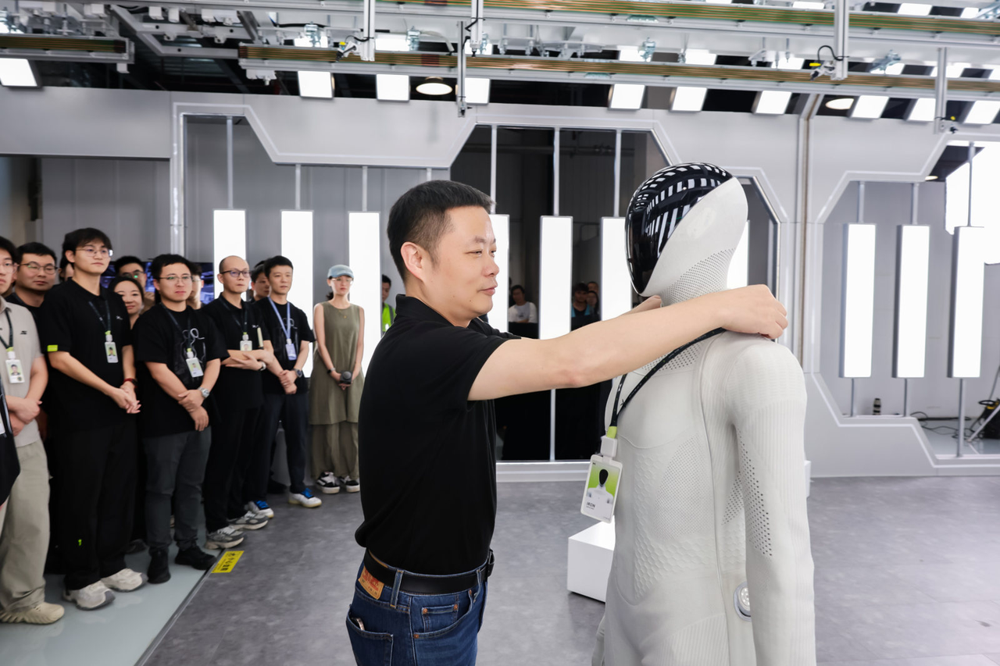

IRON2026年9月产线展示版本
小鹏机器人 · 双足人形 · 已发布
按2026年9月官方产线下线稿登记，与2024及其他地区展示版本分开。厂商计划2026年底量产、2027正式交付，均不视为已经实现；不将量产规划、自主宣传或预期毛利当作客户收益证据。参数归属以2026-09-08有日期产线稿为准：全身76、每手21自由度与三颗图灵芯片。2024/2025资料及日期未明地区技术页另存代际线索，不视为同一配置参数冲突，亦不将178 cm/70 kg沿用到当前版本。

完整规格与依据
身体规格
- 身高
- 待核实
【代际不匹配】官方2024-12-21丹麦AI Day回顾与2025-04-25挪威展会稿有178 cm，但2026-09-08当前产线版本稿未确认此身高；不能跨代继承。
本项资料核验 2026-10-24；相关链接不表示厂商从未披露。 - 整机重量
- 待核实
【代际不匹配】官方2024-12-21丹麦稿有70 kg，属于AI Day 2024展示；2026-09当前稿未确认重量或电池包含范围，不把历史数值移入。
本项资料核验 2026-10-24；相关链接不表示厂商从未披露。 - 自由度
- 76 DoF 已核对原文 · 厂商资料
明确归属2026-09-08产线版本稿：全身76 DoF，每手21。其他年份或日期未明地区页的22手部DoF不作为同配置冲突，不与76再相加。
本项资料核验 2026-10-24 - 末端执行器
- 每手21自由度（2026-09产线版本） 已核对原文 · 厂商资料
同一有日期官方稿明确每手21 DoF；地区技术页22的批次未绑定当前版本，保留代际差异而非据此将当前稿标为冲突。
本项资料核验 2026-10-24
运动与操作
- 操作负载
- 待核实
【本轮未找到】2026-09-08产线版本官方稿未给带单/双臂、姿态和持续条件的负载数字；“复杂任务”能力宣称不是载荷规格。
本项资料核验 2026-10-24；相关链接不表示厂商从未披露。 - 移动速度
- 待核实
【本轮未找到】当前稿确认自主走下产线，但没有m/s或规定工况速度；不从视频时长或步幅估算。
本项资料核验 2026-10-24；相关链接不表示厂商从未披露。
电池与工作
- 工作时间
- 待核实
【本轮未找到】当前产线稿未找到电池单次工作小时及负载工况；量产进度、演示长度不等于续航。
本项资料核验 2026-10-24；相关链接不表示厂商从未披露。 - 电池能量
- 待核实
【配置归属未明】未注明日期的地区技术页提及全固态电池，但未列Wh且未明确与2026产线批次对应；化学路线不能推断电池能量。
本项资料核验 2026-10-24；相关链接不表示厂商从未披露。 - 电池容量
- 待核实
【本轮未找到】2026-09产线稿未列Ah/mAh或电池电压，不能用其他机器人电池或能量密度宣传反推容量。
本项资料核验 2026-10-24；相关链接不表示厂商从未披露。
感知与开发
- 感知配置
- 待核实
【配置归属未明】地区展示页描述触觉皮肤、曲面显示与感知，但未提供对应该2026产线版本的具体传感器型号/数量/标配清单，不把概念方案列成已确认采购配置。
本项资料核验 2026-10-24；相关链接不表示厂商从未披露。 - 计算平台
- 图灵AI芯片×3；有效算力最高2250 TOPS 已核对原文 · 厂商资料
2026-09-08稿直述三颗图灵与最高2250 TOPS；属厂商宣称而非独立任务吞吐/自主率实测，不套旧款图灵数量。
本项资料核验 2026-10-24 - 二次开发
- 待核实
【本轮未找到】2026-09稿的本地Physical AI推理、自主执行不等于向客户开放SDK；未找到该产线版本开发接口范围或授权条款。
本项资料核验 2026-10-24；相关链接不表示厂商从未披露。
采购信息
- 美元报价
- 待核实
【报价待采集】2026-09稿仅述2027正式上市交付计划，未给当前配置美元售价；融资估值或毛利预期不是整机报价。
本项资料核验 2026-10-24；相关链接不表示厂商从未披露。 - 人民币报价
- 待核实
【报价待采集】2026-09稿未给人民币整机售价；不把投资金额、预计毛利、目标成本或其他代际估价填写成报价。
本项资料核验 2026-10-24；相关链接不表示厂商从未披露。